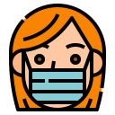

FAQs
कोरोना वायरस क्या है?
कोरोना वायरस वायरस का एक बड़ा परिवार है जो जानवरों या मनुष्यों में बीमारी का कारण हो सकता है। मनुष्यों में, कई कोरोनविर्यूज़ को सामान्य सर्दी से लेकर गंभीर बीमारियों जैसे मध्य पूर्व श्वसन श्वसन सिंड्रोम (MERS) और गंभीर तीव्र श्वसन सिंड्रोम (SARS) तक श्वसन संक्रमण का कारण माना जाता है। सबसे हाल ही में खोजे गए कोरोनावायरस का कारण कोरोनवायरस रोग COVID-19 है।

COVID-19 क्या है?
COVID-19 सबसे हाल ही में खोजे गए कोरोना वायरस के कारण होने वाला संक्रामक रोग है। यह नया वायरस और बीमारी दिसंबर 2019 में चीन के वुहान में फैलने से पहले अज्ञात थी।
COVID-19 के लक्षण क्या हैं?
COVID-19 के सबसे आम लक्षण बुखार, थकान और सूखी खांसी हैं। कुछ रोगियों में दर्द और दर्द, नाक की भीड़, नाक बह रही है, गले में खराश या दस्त हो सकता है। ये लक्षण आमतौर पर हल्के होते हैं और धीरे-धीरे शुरू होते हैं। कुछ लोग संक्रमित हो जाते हैं लेकिन कोई लक्षण विकसित नहीं करते हैं और अस्वस्थ महसूस नहीं करते हैं। अधिकांश लोगों (लगभग 80%) को विशेष उपचार की आवश्यकता के बिना बीमारी से उबरना पड़ता है।
COVID-19 पाने वाले प्रत्येक 6 में से लगभग 1 व्यक्ति गंभीर रूप से बीमार हो जाता है और सांस लेने में कठिनाई पैदा करता है। पुराने लोग, और उच्च रक्तचाप, हृदय की समस्याओं या मधुमेह जैसी अंतर्निहित चिकित्सा समस्याओं वाले लोगों में गंभीर बीमारी विकसित होने की अधिक संभावना है। बुखार, खांसी और सांस लेने में कठिनाई वाले लोगों को चिकित्सा ध्यान देना चाहिए।

COVID-19 कैसे फैलता है?
लोग वायरस वाले अन्य लोगों से COVID -19 पकड़ सकते हैं। यह बीमारी नाक या मुंह से छोटी बूंदों के माध्यम से एक व्यक्ति से दूसरे व्यक्ति में फैल सकती है जब सीओवीआईडी -19 खांसी या साँस छोड़ता है। ये बूंदें व्यक्ति के आसपास की वस्तुओं और सतहों पर उतरती हैं। अन्य लोग तब इन वस्तुओं या सतहों को छूकर, फिर अपनी आँखों, नाक या मुँह को छूकर COVID -19 को पकड़ लेते हैं। लोग COVID -19 को भी पकड़ सकते हैं यदि वे COVID-19 वाले व्यक्ति से बूंदों में सांस लेते हैं जो खांसी करते हैं या बूंदों को बाहर निकालते हैं। यही कारण है कि बीमार रहने वाले व्यक्ति से 1 मीटर (3 फीट) से अधिक रहना महत्वपूर्ण है।
क्या COVID-19 का कारण बनने वाला वायरस हवा के माध्यम से प्रसारित हो सकता है?
अब तक के अध्ययनों से पता चलता है कि सीओवीआईडी -19 का कारण बनने वाला वायरस मुख्य रूप से है के बजाय श्वसन बूंदों के साथ संपर्क के माध्यम से प्रेषित हवा के माध्यम से। पिछला जवाब देखें “COVID-19 कैसे होता है फैलाव?
क्या मैं बीमारी वाले किसी व्यक्ति के मल से COVID -19 पकड़ सकता हूं?
एक संक्रमित व्यक्ति के मल से COVID-19 को पकड़ने का जोखिम कम प्रतीत होता है। हालांकि प्रारंभिक जांच से पता चलता है कि वायरस कुछ मामलों में मल में मौजूद हो सकता है, इस मार्ग के माध्यम से फैलता प्रकोप की एक मुख्य विशेषता नहीं है। COVID-19 के तरीकों पर चल रहा शोध फैला हुआ है और नए निष्कर्षों को साझा करता रहेगा। क्योंकि यह एक जोखिम है, हालांकि, बाथरूम का उपयोग करने और खाने से पहले नियमित रूप से हाथ साफ करना एक और कारण है।
क्या CoVID-19 को ऐसे व्यक्ति से पकड़ा जा सकता है जिसके कोई लक्षण नहीं हैं?
जिस तरह से बीमारी फैलती है वह किसी व्यक्ति द्वारा खांसी होने पर निष्कासित श्वसन बूंदों के माध्यम से होती है। बिना किसी लक्षण के किसी व्यक्ति से COVID -19 को पकड़ने का जोखिम बहुत कम है। हालांकि, COVID-19 वाले कई लोग केवल हल्के लक्षणों का अनुभव करते हैं। यह बीमारी के शुरुआती चरणों में विशेष रूप से सच है। इसलिए, किसी ऐसे व्यक्ति से COVID -19 को पकड़ना संभव है, उदाहरण के लिए, केवल एक हल्की खांसी और बीमार महसूस नहीं करता है।

मुझे COVID-19 को पकड़ने की कितनी संभावना है?
जोखिम इस बात पर निर्भर करता है कि आप कहां हैं - और अधिक विशेष रूप से, चाहे वहां कोई COVID-19 का प्रकोप हो। अधिकांश स्थानों के अधिकांश लोगों के लिए COVID-19 को पकड़ने का जोखिम अभी भी कम है। हालांकि, अब दुनिया भर के ऐसे शहर (शहर या इलाके) हैं, जहां यह बीमारी फैल रही है। इन क्षेत्रों में रहने या जाने वाले लोगों के लिए, इन क्षेत्रों में COVID-19 को पकड़ने का जोखिम अधिक होता है। COVID-19 के एक नए मामले की पहचान होने पर सरकारें और स्वास्थ्य अधिकारी हर बार जोरदार कार्रवाई कर रहे हैं। यात्रा, आंदोलन या बड़े समारोहों पर किसी भी स्थानीय प्रतिबंध का पालन करना सुनिश्चित करें। रोग नियंत्रण प्रयासों के साथ सहयोग करने से आपके COVID-19 को पकड़ने या फैलने का जोखिम कम हो जाएगा। COVID-19 के प्रकोपों को शामिल किया जा सकता है और प्रसारण को रोका जा सकता है, जैसा कि चीन और कुछ अन्य देशों में दिखाया गया है। दुर्भाग्य से, नए प्रकोप तेजी से उभर सकते हैं। उस स्थिति से अवगत होना महत्वपूर्ण है जहाँ आप जा रहे हैं या जाना चाहते हैं।
क्या मुझे COVID-19 की चिंता करनी चाहिए?
सीओवीआईडी -19 संक्रमण के कारण बीमारी आम तौर पर हल्के होती है, खासकर बच्चों और युवा वयस्कों के लिए। हालांकि, यह गंभीर बीमारी का कारण बन सकता है: प्रत्येक 5 में से 1 व्यक्ति जो इसे पकड़ता है उसे अस्पताल में देखभाल की आवश्यकता होती है। इसलिए लोगों के लिए यह चिंता करना बहुत सामान्य है कि COVID-19 का प्रकोप उन्हें और उनके प्रियजनों को कैसे प्रभावित करेगा।
हम अपनी चिंताओं को अपने, अपने प्रियजनों और अपने समुदायों की रक्षा के लिए कार्यों में शामिल कर सकते हैं। इन क्रियाओं के बीच सबसे पहले और सबसे महत्वपूर्ण है नियमित रूप से और अच्छी तरह से हाथ धोना और अच्छी श्वसन स्वच्छता। दूसरे, स्थानीय स्वास्थ्य अधिकारियों की सलाह को ध्यान में रखें और यात्रा, आंदोलन और सभाओं पर कोई प्रतिबंध लगाए जाएं।

किस पर गंभीर बीमारी होने का खतरा है
नहीं। एंटीबायोटिक्स वायरस के खिलाफ काम नहीं करते हैं, वे केवल बैक्टीरिया के संक्रमण पर काम करते हैं। COVID-19 एक वायरस के कारण होता है, इसलिए एंटीबायोटिक्स काम नहीं करते हैं। एंटीबायोटिक्स का उपयोग COVID-19 की रोकथाम या उपचार के साधन के रूप में नहीं किया जाना चाहिए। वे केवल एक जीवाणु संक्रमण के इलाज के लिए एक चिकित्सक द्वारा निर्देशित के रूप में इस्तेमाल किया जाना चाहिए
क्या ऐसी कोई दवा या थेरेपी है जो COVID-19 को रोक या ठीक कर सकती है
हालांकि कुछ पश्चिमी, पारंपरिक या घरेलू उपचार COVID-19 के आराम और लक्षणों को कम कर सकते हैं, इस बात का कोई सबूत नहीं है कि वर्तमान दवा रोग को रोक सकती है या ठीक कर सकती है। हम COVID-19 की रोकथाम या इलाज के रूप में एंटीबायोटिक दवाओं सहित किसी भी दवा के साथ स्व-दवा की सिफारिश नहीं करते हैं। हालांकि, कई चल रहे नैदानिक परीक्षण हैं जिनमें पश्चिमी और पारंपरिक दोनों दवाएं शामिल हैं। क्लिनिकल निष्कर्ष उपलब्ध होते ही हम अद्यतन जानकारी देना जारी रखेंगे।


क्या COVID-19 के लिए कोई वैक्सीन दवा या उपचार है
अभी नहीं। आज तक, COVID-2019 को रोकने या इसका इलाज करने के लिए कोई टीका और कोई विशिष्ट एंटीवायरल दवा नहीं है। हालांकि, प्रभावित लोगों को लक्षणों से राहत पाने के लिए देखभाल करनी चाहिए। गंभीर बीमारी वाले लोगों को अस्पताल में भर्ती होना चाहिए। अधिकांश रोगी सहायक देखभाल के लिए धन्यवाद पुनर्प्राप्त करते हैं। संभावित टीकों और कुछ विशिष्ट दवा उपचारों की जांच चल रही है। नैदानिक परीक्षणों के माध्यम से उनका परीक्षण किया जा रहा है। COVID -19 के खिलाफ खुद को और दूसरों को बचाने के लिए सबसे प्रभावी तरीके हैं कि आप अपने हाथों को अक्सर साफ करें, अपनी खाँसी को कोहनी या ऊतक के मोड़ से ढकें, और खांसी वाले लोगों से कम से कम 1 मीटर (3 फीट) की दूरी बनाए रखें। छींक आना
क्या COVID-19 SARS के समान है?
नहीं। वह वायरस जो COVID-19 का कारण बनता है और जो 2003 में गंभीर तीव्र श्वसन सिंड्रोम (SARS) के प्रकोप का कारण था, वे आनुवंशिक रूप से एक-दूसरे से संबंधित हैं, लेकिन वे जो रोग पैदा करते हैं, वे काफी भिन्न होते हैं। सार्स COVID -19 की तुलना में अधिक घातक लेकिन बहुत कम संक्रामक था। 2003 के बाद से दुनिया में कहीं भी SARS का कोई प्रकोप नहीं हुआ है।

क्या मुझे अपनी सुरक्षा के लिए मास्क पहनना चाहिए
यदि आप COVID-19 लक्षणों (विशेष रूप से खाँसी) के साथ बीमार हैं या किसी ऐसे व्यक्ति की देखभाल कर रहे हैं जो COVID -19 हो तो केवल मास्क पहनें। डिस्पोजेबल फेस मास्क का उपयोग केवल एक बार किया जा सकता है। यदि आप बीमार नहीं हैं या किसी ऐसे व्यक्ति की तलाश कर रहे हैं जो बीमार है तो आप एक मुखौटा बर्बाद कर रहे हैं। दुनिया भर में मास्क की कमी है, इसलिए हम लोगों से समझदारी से मास्क का उपयोग करने का आग्रह करते हैं। हम कीमती संसाधनों के अनावश्यक अपव्यय से बचने और मास्क के गलत उपयोग से बचने के लिए मेडिकल मास्क के तर्कसंगत उपयोग की सलाह देते हैं। COVID -19 के खिलाफ खुद को और दूसरों को बचाने के लिए सबसे प्रभावी तरीके आपके हाथों को अक्सर साफ करते हैं, कोहनी या ऊतक के मोड़ से अपनी खांसी को कवर करते हैं। और खांसी या छींकने वाले लोगों से कम से कम 1 मीटर (3 फीट) की दूरी बनाए रखें।
COVID-19 के लिए ऊष्मायन अवधि कब तक है??
"ऊष्मायन अवधि" का अर्थ है वायरस को पकड़ने और बीमारी के लक्षणों की शुरुआत के बीच का समय। COVID-19 के लिए ऊष्मायन अवधि के अधिकांश अनुमान 1-14 दिनों से लेकर, आमतौर पर लगभग पाँच दिनों के होते हैं। अधिक डेटा उपलब्ध होते ही ये अनुमान अपडेट हो जाएंगे।
क्या मैं अपने पालतू जानवर से COVID -19 पकड़ सकता हूं?
जबकि हांगकांग में एक कुत्ते के संक्रमित होने का एक उदाहरण है, आज तक, कोई सबूत नहीं है कि एक कुत्ता, बिल्ली या कोई पालतू जानवर COVID -19 संचारित कर सकता है। COVID-19 मुख्य रूप से उन बूंदों के माध्यम से फैलता है जब एक संक्रमित व्यक्ति खांसी, छींक या बोलता है। अपने आप को बचाने के लिए, अपने हाथों को बार-बार साफ करें। हम इस और अन्य COVID- 19 विषयों पर नवीनतम शोध की निगरानी करना जारी रखते हैं और नए निष्कर्ष उपलब्ध होने पर अपडेट करेंगे।
क्या किसी भी क्षेत्र से पैकेज प्राप्त करना सुरक्षित है जहां COVID-19 की सूचना दी गई है?
हाँ। एक संक्रमित व्यक्ति की व्यावसायिक वस्तुओं को दूषित करने की संभावना कम है और वायरस को पकड़ने का जोखिम है जो COVID-19 को एक पैकेज से ले जाता है, जिसे स्थानांतरित किया गया है, यात्रा की गई है और विभिन्न स्थितियों और तापमान के संपर्क में भी कम है।